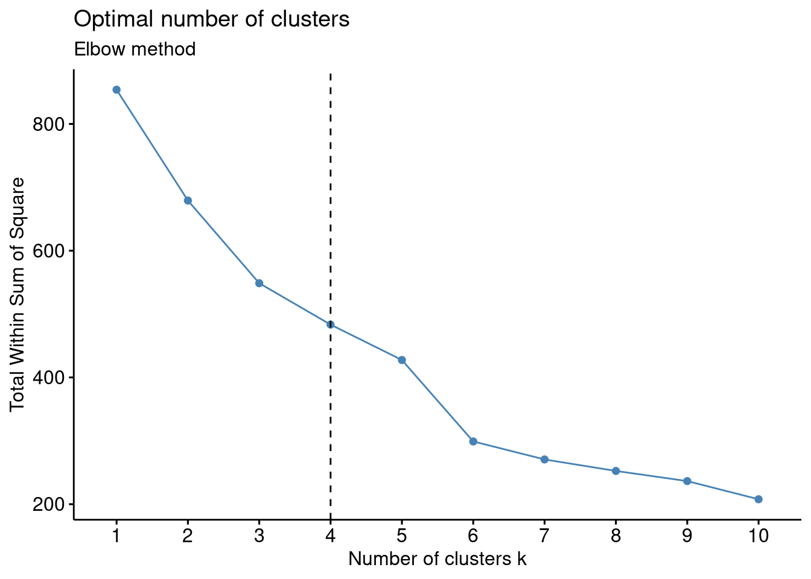
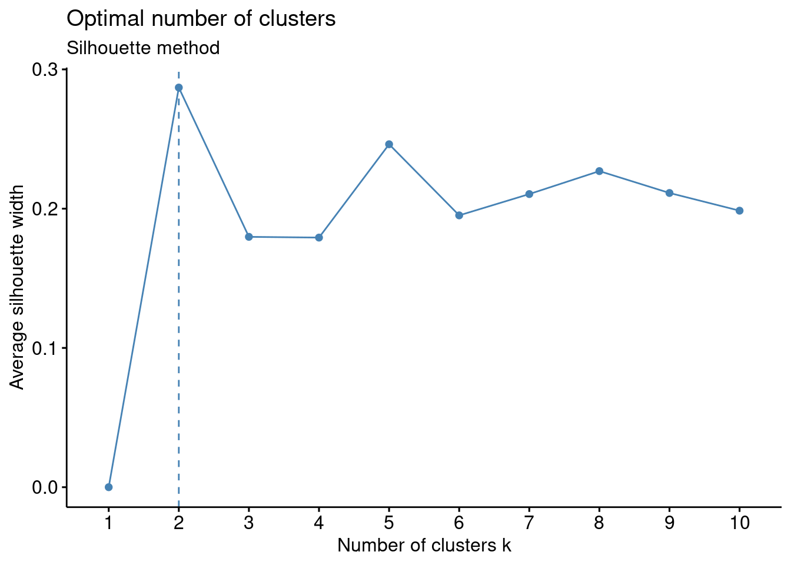
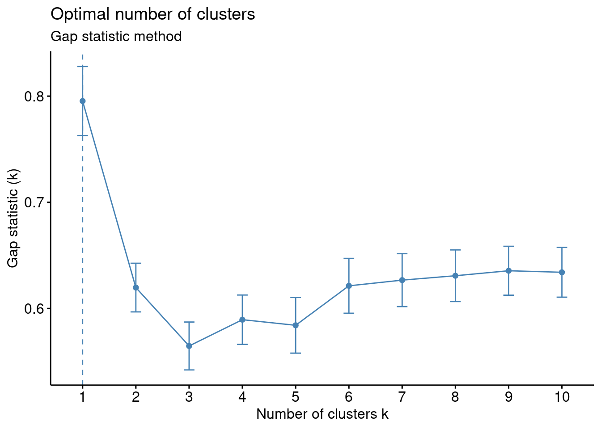
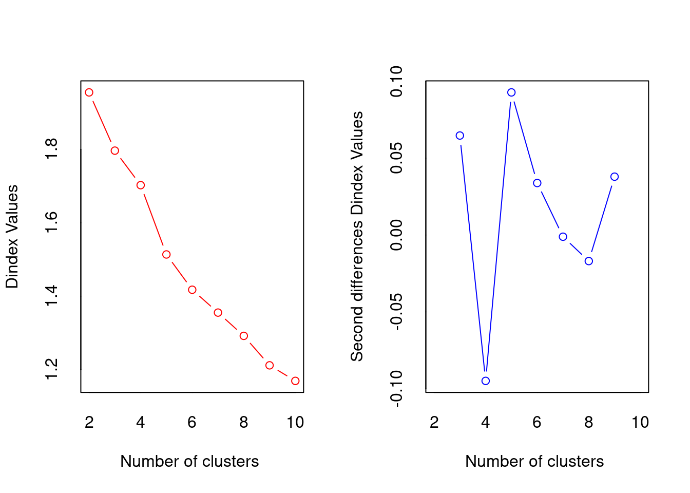
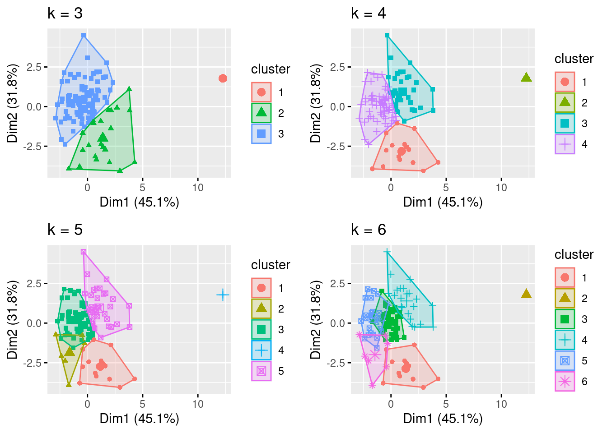

Code
library(knitr)
include_graphics("Figure 1.png")
Through the use of data mining technology, large amounts of complex financial data can be analyzed. K-means clustering (KMC) is an algorithm that can be used for potentially maximizing profit, or reducing risk, when investing in company stock (Momeni, Mohseni, and Soofi 2015). Using KMC, stock data can be grouped together in accordance with predetermined criteria to find similarity, dissimilarity, and structure. KMC can also be used to classify financial features according to maximum and minimum similarity.Clustering algorithms, such as the k-means clustering (KMC) algorithm, have gained attention as valuable tools for aiding investment decision-making. However, there are some shortcomings to the method including the determination of the number of ‘k clusters’, different distance calculation methods, and the problem of local extremum (Fang and Chiao 2021).
What is k-means clustering(KMC)? It is a version of unsupervised machine learning. Unsupervised learning would utilize algorithms to analyze and cluster datasets that are unlabeled (Malik and Tuckfield 2019). In this case, K-means clustering would be considered an unsupervised learning method where similar data points will be assembled into groups of unlabeled data . It groups similar unlabled data by looking at the average distance between the objects in each group which is known as the centroid and the K groups. (n.d.a) below shows a visual representation of k-means Then you must measure the distance between each objects and centroid and assigned to the correct groups until all objects have a group (Yuan and Yang 2019). In order to weigh variables one process that can be used is the ‘Analytic Hierarchal Process’. The stages of the KMC algorithm were as follows:
Initial stage that partitioned the objects randomly into ‘k’ clusters.
The repetition stage by calculating the center of each cluster using the mean of the data, compute the squared Euclidean distance from each object to each cluster, and compute the squared error function.
The improvement stage where objects were assigned to the cluster with the nearest center.
The stop stage which was a process that continued until no object move clusters or the objective function value doesn’t reduce (Momeni, Mohseni, and Soofi 2015).
library(knitr)
include_graphics("Figure 1.png")
Source: (https://www.javatpoint.com/k-means-clustering-algorithm-in-machine-learning)
Using KMC it can help stock buyers or sellers understand the stock market pattern. K-means clustering when combined with regression method also helps with predicting stock future stock prices. This allows users to know when the best time to get in the market before a price increase/decrease, which in turn, tell sellers to hold or to sale their stocks (Bini and Mathew 2016). KMC is overall a great algorithm, but it also does have limitations. Some of those limitations include the determination of the number of ‘k clusters’, different distance calculation methods, and the problem of local extremum (Fang and Chiao 2021). Other types of limitations include the inability to use all types of data with KMC (Ahmed, Seraj, and Islam 2020).
This paper provides the definition of KMC, some of the limitations of the methodology, as well as our analysis on how well KMC does handling stock data.
There are several methods involved when selecting the most optimal number of clusters. This paper we looked at the elbow, silhouette, as well as the gap statistic method in order to see which was the best method to use.
The first method, Elbow Method is used to find a good number of cluster by looking at a point where the sum of squares error (SSE) decreases rapidly. SSE looks at how far each point is from the center of its cluster, essentially the points should be close together to minimize the SSE (Yuan and Yang 2019).
Steps to find the best cluster number using elbow method:
Select different number of clusters to try
Calculate the SSE for each cluster
Plot the SSE on the x axis number of clusters, while on the y axis will show the SSE
Once you plot the results will show in an elbow shape, the point found in the elbow shows SSE decreasing rapidly. That point is considered the optimal cluster number.
Silhouette Method – The silhouette method is used to determine how well data points fits into their cluster. It does so by looking at how close the data point is to its own cluster compared to the other clusters. Steps to find the best cluster number using silhouette method:
Gap Statistic Method - The gap statistic method is used to find the k value with the largest gap to help compare the within-cluster dispersion. Using this method along with the other 2 we can determine which is best to select the optimal cluster number.
\[ G(k) = E_n(\log(W_k)) - \log(W_k) \]
\[ W_k = \frac{1}{P} \sum_{b=1}^{P} \log(W^*_{kb}) \approx \frac{1}{P} \sum_{b=1}^{P} \log(W^*_{kb}) \]
As number of clusters increase, the sum of squares error (SSE) within the cluster decreases because the data points gets closer to their respective cluster center. With elbow method the objective is to find k where SSE decreases most rapidly. Therefore, from figure it can be seen that the optimal number of clusters is 3. This is same as the actual number of classes in the dataset.
Calculating the distance for KMC can be achieved by a few different method. The default mostly used one is known as euclidean distance, this is used to calculate the distance between a point and it’s initial cluster. \[ d_{euc}(x, y) = \sqrt{\sum_{i = 1}^{n}{(x_i - y_i)^2}} \]
The dataset was taken from the publication “Irrational Exuberance” by Robert Shiller (Shiller 2015). The dataset summarized 150 years of data on the S&P 500 index which consisted of the 500 largest companies by market capitalization listed on stock exchanges in the United States (n.d.b). Specifically, the dataset metrics included the S&P 500 composite index valuation, dividends, earnings, consumer price index, long interest rate, real price, real dividend, real total price, real earnings, cyclically adjusted price earnings ratio, monthly total bond returns, and others. For the project’s analysis, the data was converted to month-by-month percentage changes to make meaningful clusters which included the composite index, consumer price index, long-term interest rates, real earnings, cyclically adjusted price to earnings ratio (adjusted and total), and real total bond return. The dataset was limited to the years 2012 to present considering that more recent data may be more germane to today’s dynamic market conditions. The CAPE ratio was included in the dataset which was an innovative metric proposed by Robert Shiller which is calculated as follows (Shiller 2015). \[ \text{Cyclically adjusted price - to - earnings ratio} = \frac{\text{Share Price}}{{\text{(10-year Inflation Adjusted Average Earnings)}}} \] The CAPE ratio has the purported advantage of measuring valuation over a ten-year period to smooth out random fluctuations in corporate profits thereby providing an effective forecasting tool to identify undervalued or overvalued indexes or stocks. The historical average of the CAPE ratio for the S&P 500 has been 16.8; however, climbing ratios of 28 starting in 1997 accurately predicted the dotcom bubble crash of 2000 followed by the prediction of the 2008 market crash. Although some critics point out limitations of the CAPE ratio being too backward looking; market bubbles and unrealistic equity returns using CAPE have been accurately predicted.
# loading packages
library(readr)
library(tidyverse)
library(ggplot2)
library(cluster)
library(NbClust)
library(factoextra)
library("dplyr")
library(gridExtra)
# read csv file into R
df<- read_csv("SPDatasetLAST.csv")
#view the data headers
head(df)# A tibble: 6 × 7
SPCompIndexPercentChange CPIPerc…¹ LongI…² RealEa…³ Cyclic…⁴ CAPETo…⁵ RealTo…⁶
<dbl> <dbl> <dbl> <dbl> <dbl> <dbl> <dbl>
1 0.04 0.00296 0.110 0.00157 0.0311 0.0311 -1.86e-2
2 0.02 0.00821 0.0366 -0.00357 0.00685 0.00744 -1.28e-2
3 0.02 0.00258 -0.0101 0.00192 0.0168 0.0168 8.07e-4
4 0.01 -0.00103 -0.102 0.0134 0.00803 0.00807 2.10e-2
5 0.04 0.00181 0.0966 0.0104 0.0358 0.0360 -1.56e-2
6 -0.01 0.00236 0.192 0.00961 -0.0205 -0.0205 -3.35e-2
# … with abbreviated variable names ¹CPIPercentChange,
# ²LongInterestRatePercentChange, ³RealEarningsPercentChange,
# ⁴CyclicallyAdjPEPercentageChange, ⁵CAPETotalPercentageChange,
# ⁶RealTotalBondReturnPercentageChange# confirm the data is a dataframe
class(df)[1] "spec_tbl_df" "tbl_df" "tbl" "data.frame" # standardize the data having a standard normal with a mean of 0 and a standard deviation of 1
df<-scale(df)
#view the data
head(df) SPCompIndexPercentChange CPIPercentChange LongInterestRatePercentChange
[1,] 0.89659338 0.20265878 1.0060604
[2,] 0.33961870 1.65299283 0.2579556
[3,] 0.33961870 0.09832691 -0.2158457
[4,] 0.06113137 -0.90124837 -1.1476315
[5,] 0.89659338 -0.11679980 0.8654489
[6,] -0.49584331 0.03659162 1.8294544
RealEarningsPercentChange CyclicallyAdjPEPercentageChange
[1,] -0.08698395 0.8407465
[2,] -0.28180011 0.1198802
[3,] -0.07361572 0.4154007
[4,] 0.36261716 0.1549720
[5,] 0.24822909 0.9826116
[6,] 0.21833802 -0.6941067
CAPETotalPercentageChange RealTotalBondReturnPercentageChange
[1,] 0.8474031 -0.9274587
[2,] 0.1423810 -0.6077692
[3,] 0.4217869 0.1363896
[4,] 0.1611393 1.2431075
[5,] 0.9936749 -0.7642882
[6,] -0.6890358 -1.7469219#estimate the optimal number of clusters according to the number of bends (elbow method)
fviz_nbclust(df, kmeans, method = "wss") +
geom_vline(xintercept = 4, linetype = 2)+
labs(subtitle = "Elbow method")
#estimate the optimal number of clusters Silhouette method
fviz_nbclust(df, kmeans, method = "silhouette")+
labs(subtitle = "Silhouette method")
#estimate the optimal number of clusters with the 'gap statistics' method
fviz_nbclust(df, kmeans, nstart = 25, method = "gap_stat", nboot = 50)+
labs(subtitle = "Gap statistic method")
#NbClust provides 30 indexes for determining the optimal number of clusters in a data set and offers the best clustering scheme from different results
nb <- NbClust(df, distance = "euclidean", min.nc = 2,
max.nc = 10, method = "kmeans")*** : The Hubert index is a graphical method of determining the number of clusters.
In the plot of Hubert index, we seek a significant knee that corresponds to a
significant increase of the value of the measure i.e the significant peak in Hubert
index second differences plot.

*** : The D index is a graphical method of determining the number of clusters.
In the plot of D index, we seek a significant knee (the significant peak in Dindex
second differences plot) that corresponds to a significant increase of the value of
the measure.
*******************************************************************
* Among all indices:
* 6 proposed 2 as the best number of clusters
* 2 proposed 3 as the best number of clusters
* 3 proposed 4 as the best number of clusters
* 6 proposed 5 as the best number of clusters
* 2 proposed 6 as the best number of clusters
* 1 proposed 7 as the best number of clusters
* 1 proposed 9 as the best number of clusters
* 3 proposed 10 as the best number of clusters
***** Conclusion *****
* According to the majority rule, the best number of clusters is 2
******************************************************************* #test kmeans cluster for k=3, k=4 and k=5 for comparison
k3 <- kmeans(df, centers = 3, nstart = 25)
k4 <- kmeans(df, centers = 4, nstart = 25)
k5 <- kmeans(df, centers = 5, nstart = 25)
k6 <- kmeans(df, centers = 6, nstart = 25)# plots to compare
p1 <- fviz_cluster(k3, geom = "point", data = df) + ggtitle("k = 3")
p2 <- fviz_cluster(k4, geom = "point", data = df) + ggtitle("k = 4")
p3 <- fviz_cluster(k5, geom = "point", data = df) + ggtitle("k = 5")
p4 <- fviz_cluster(k6, geom = "point", data = df) + ggtitle("k = 6")
grid.arrange(p1, p2, p3, p4, nrow = 2)
#Cluster analysis, k=3, nstart = 25 will generate 25 initial configurations
set.seed(123)
final3 <- kmeans(df, 3, nstart = 25)
final4 <- kmeans(df, 4, nstart = 25)
final5 <- kmeans(df, 5, nstart = 25)
final6 <- kmeans(df, 6, nstart = 25)#view the kmeans clustering including: cluster, centers, total sum of squares, vector of within-cluster sum squares, total within-sum of squares, the between-cluster sum of squares, and number of points in each cluster
print(final4)K-means clustering with 4 clusters of sizes 69, 1, 38, 15
Cluster means:
SPCompIndexPercentChange CPIPercentChange LongInterestRatePercentChange
1 0.5091327 0.04409966 0.1741670
2 -6.9010521 -1.21471372 -4.3700644
3 -0.3859141 -0.53345867 -0.7321102
4 -0.9042914 1.22955111 1.3448485
RealEarningsPercentChange CyclicallyAdjPEPercentageChange
1 0.1963760 0.5410223
2 -2.4270359 -5.8070446
3 -0.2155105 -0.3902915
4 -0.1955674 -1.1128277
CAPETotalPercentageChange RealTotalBondReturnPercentageChange
1 0.5399368 -0.1757434
2 -5.7976262 3.5727109
3 -0.3852076 0.8583392
4 -1.1213416 -1.6042206
Clustering vector:
[1] 1 1 1 3 1 4 1 1 1 3 1 1 1 3 1 3 3 1 3 3 1 3 1 3 3 1 1 3 4 4 3 3 3 1 1 3 3
[38] 3 1 1 3 3 1 1 1 1 1 1 1 1 1 3 1 1 1 3 1 1 1 1 1 4 3 3 1 1 1 1 1 4 3 3 3 1
[75] 1 1 3 3 3 3 1 3 1 1 1 3 2 3 1 1 1 1 3 1 1 1 1 1 4 1 1 1 1 1 1 4 1 3 4 4 4
[112] 4 4 4 3 1 4 4 1 3 1 1 3
Within cluster sum of squares by cluster:
[1] 225.55854 0.00000 115.11444 77.20815
(between_SS / total_SS = 51.1 %)
Available components:
[1] "cluster" "centers" "totss" "withinss" "tot.withinss"
[6] "betweenss" "size" "iter" "ifault" The analysis made use of several R packages including the following:
• The ‘NbClust’ package assisted in cluster analysis by finding the optimal number of groups in the data (Maechler, 2023).
• The “factoextra” package was used to calculate and visualize kmeans (Kassambara and Mundt 2023).
The entire dataset included metrics that generated clusters that were not meaningful considering the expected result in terms of S&P 500 index returns versus economic and corporate data. Therefore, several trials were conducted until meaningful results and clusters were generated. The data was ‘normalized’ using scale() to allow for comparable data using z-score versus raw data. Determining the optimal number of clusters considering the various methods returned inconsistent results as follows:
• Elbow method: 4 clusters
• Silhouette method: 2
• Gap statistic: 1
• Humbert statistic: 5
• D index: 4
• Among all other indices:
o 6 proposed 2 as the best number of clusters
o 2 proposed 3 as the best number of clusters
o 3 proposed 4 as the best number of clusters
o 6 proposed 5 as the best number of clusters
o 2 proposed 6 as the best number of clusters
o 1 proposed 7 as the best number of clusters
o 1 proposed 9 as the best number of clusters
o 3 proposed 10 as the best number of clusters
Considering the lack of agreement in the optimal number of clusters, the visualizations were analyzed as were the cluster means. The visualization with k=4 provided well-defined clusters with minimal overlap. However, k=5 and k=6 visualizations had poorly defined clusters with significant overlap (Géron 2022). Additionally, the distance of the data from the centroids for cluster with k=4 visually appeared sufficiently small. The elbow method corresponded with k=4 where a ‘bend’ in the data was identified with four clusters. Also, the Dunn index indicated four clusters; this metric sets to identify clusters that are the most compact and well separated. Additionally, the cluster means data was analyzed for k=3, k=4, k-5, and k=6 considering the expected results given economic and corporate indicators and movements in the S&P 500 index. It was therefore determined that k=4 was the optimal number of clusters with sizes of 69, 1, 38, and 15. Although one cluster had only “1” data point, it was not eliminated as an outlier since stock market traders are faced with extreme events in the stock market, and these shocks should not be ignored considering significant shifts can severely affect portfolios. In this context, extreme events that become predictable using kmeans may be useful to traders.
The kmeans centroids delivered results that would be expected as follows:
• Cluster 1: the moderate increase of the S&P 500 of this cluster mean was ≈ 0.51 which was clustered with a slight increase in consumer price index ≈ 0.04 (a metric to reflect inflation), a small increase in long interest rate ≈ 0.17 (this often occurs when the Federal Reserve responds to increasing inflation with interest rate increases often correlated to increasing stock market pricing), a small increase in real earnings ≈ 0.20, a significant increase in CAPE ≈ 0.54 (a positive predictor for market valuation increase), and a small decrease in total bond return ≈ -0.18 (investors often move assets out of fixed income into stocks when stock market returns are deemed favorable) (Bosco and Khan 2018)
• Cluster 2: only contained one data point showing a nearly 7 standard deviation decrease from the mean indicating a market crash which was clustered with a significant decrease in consumer price index (deflation), a significant decrease in long interest rates (the Federal Reserve rapidly cutting interest rates), a significant decrease in real earnings and CAPE, while total bond returns significantly increased (consistent with traders moving money out of a crashing stock market into the safe haven of bonds).
• Cluster 3: a moderate decline in the stock market ≈ -0.39 was clustered with moderate deflation, real earnings loss, a CAPE decrease, and a moderate return in bonds.
• Cluster 4: a significant decline in the stock market ≈ -0.90 was clustered with a significant increase in consumer price index ≈ 1.23 (inflation), a significant long interest rate increase ≈ 1.34, a small decline in real earnings ≈ -0.20, a significant decline in CAPE ≈ -1.12, and a significant decline in total bond return of ≈ -1.60.
The cluster means provided correlating metrics that a trader could potentially use to reap better gains when investing in the S&P 500. For example, both inflationary and deflationary cycles led to stock market losses. These losses were also reflected in the CAPE ratios. Stock market increases were correlated with insignificant inflationary pressures correlated with earnings increases and a positive CAPE. Traders could potentially use all of these factors as signals of when to buy and sell the S&P 500 thereby watching long interest rate, consumer price index, earnings, bond returns, and CAPE ratios to optimize the purchase and sale of the S&P 500 index demonstrating the utility of kmeans analysis.
Ahmed, M., Seraj, R., & Islam, S. M. S. (2020). The k-means algorithm: A comprehensive survey and performance evaluation. Electronics, 9(8), 1295.
Babu, M. S., Geethanjali, N., & Satyanarayana, B. (2012). Clustering approach to stock market prediction. International Journal of Advanced Networking and Applications, 3(4), 1281.
Bini, B. S., & Mathew, T. (2016). Clustering and regression techniques for stock prediction. Procedia Technology, 24, 1248-1255.
Bosco, J., Khan, F. (2018). Stock Market Prediction and Efficiency Analysis Using Recurrent Neural Network. Germany: GRIN Verlag.
Fang, & Chiao, C. (2021). Research on prediction and recommendation of financial stocks based on K-means clustering algorithm optimization. Journal of Computational Methods in Sciences and Engineering, 21(5), 1081–1089. https://doi.org/10.3233/JCM-204716
Géron, A. (2022). Hands-on machine learning with Scikit-Learn, Keras, and TensorFlow. ” O’Reilly Media, Inc.”.
Kassambara, A., & Mundt, F. (2023). Factoextra: Extract and visualize the results of multivariate data anaysis. Retrieved from CRAN: https://CRAN.R-project.org
Maechler, M. (2023). NbClust: Finding groups in data. Retrieved from CRAN package: https://CRAN.R-project.org
Malik, & Tuckfield, B. (2019). Applied unsupervised learning with R: Uncover hidden relationships and patterns with K-Means clustering, hierarchical clustering, and PCA (1st edition). Packt Publishing Ltd.
Ossareh, Pourjafar, M. S., & Kopczewski, T. (2021). Cognitive Biases on the Iran Stock Exchange: Unsupervised Learning Approach to Examining Feature Bundles in Investors’ Portfolios. Applied Sciences, 11(22), 10916–. https://doi.org/10.3390/app112210916
Shiller, R. J. (2015). Irrational exuberance. In Irrational exuberance. Princeton university press.
Soofi , Mohseni , M., & Momeni , M. (2015). Clustering Stock Market Companies via K- Means Algorithm. Kuwait Chapter of Arabian Journal of Business & Management Review, 4(5), 1–10. https://doi.org/10.12816/0018959
S&P Dow Jones Indices. (2023). S&P 500. Retrieved from https://www.spglobal.com/spdji/en/indices/equity/sp-500/#overview
Yedla, M., Pathakota, S. R., & Srinivasa, T. M. (2010). Enhancing K-means clustering algorithm with improved initial center. International Journal of computer science and information technologies, 1(2), 121-125.
Yuan, C., & Yang, H. (2019). Research on K-value selection method of K-means clustering algorithm. J, 2(2), 226-235.
Zuhroh, Rofik, M., & Echchabi, A. (2021). Banking stock price movement and macroeconomic indicators: k-means clustering approach. Cogent Business & Management, 8(1), 1–10. https://doi.org/10.1080/23311975.2021.1980247